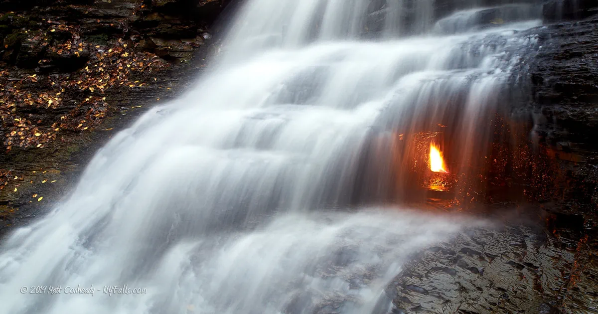

Hidden World
Our planet is like a giant treasure chest full of wonders. Some are natural phenomena or man-made but there are strange places out there that are like big question marks.
These are places that will not only make you wonder but will challenge everything you thought you knew leaving you absolutely astornished.
1. Barsak plateau Kazakhstan
In the heart of Kazakhstan's enigmatic Barsak plateau lies a realm shrouded in mystery. A place where time seemingly stand still or as locals ominously call it "The place of no return".
This name came from Kazak legends about people that went there but never return or came back after years with strange stories of time glitches and UFO sightings. The unsolved question is actually 'the reason why people go there and never return'. This spooky plateau also known as Barsakelmes used to be an highland in the Aral sea.
Another strange thing is that some people turned blue after staying overnight in this plateau. Here is another one, there are graveyards there with new graves but who is buried there and who is doing the burying on this empty island.
2. Colosso Dell' Appennino
This mysterious statue is not just any statue, it's a century old mystery that has stirred up a great deal of unanswered questions, crafted by the talented flemish sculptor Qiambologna near Florence, Italy.
This massive stone sculpture looks like a living embodiment of the appenine mountains. This sculpture breathes out smoke and has slits in it's eyes and even sweats and cries through a network of water pipes holding a sea monster that's forming a pond.

3. Eternal Flame fall
There is a beautiful but strange place in Newyork where Fire and Water dance together creating a magical sight that catches the eye of the curious and even leaves the experts scratching their heads.
There are no woods to keep the ethernal flame burning, Scientists believes the gas is mostly Methane, with a sprinkle of Ethane, Propane and Butane believed to come from a super ancient stash of organic matter tusked deep underground for millions of years.
4. The devil's kettle
In the heart of Judge C.R magney state park in Minnesota lies a natural mystery. Here, along the Brule river near lake superior's north shore,something truly perculiar happens. This river splits at a rocky outcrop where on one side, the water flows down a two step stone slope like a regular waterfall.but on the otherside, something perculiarhappens.
The water vanishes into a deep hole and seemingly disappears forever. The question now is, where does the water go? To solve the mystery, people tried tossing all sorts of things into the hole, things like pingballs, dye, GPS trackers even logs. Strangly none of these things never popped up in the lake or anywhere else. It was like the water was going into a magical portal.

5. The magnetic hill in Moncton new Brunwick, Canada
This one is a puzzler because you'd have trouble figuring out whether you are going up or down hill. It is positioned on the outskirt of the city and nested amid its picturest landscape. The primary attraction of the magnetic hill is the perplexing orbital illusion that seemingly defiles the laws of physics. Shouldn't an unpropelled object move from an high point instead? but in this hill it is moving from a lower point to an higher point. When you get to a particular point on this hill and you shift your gear to neutral you'll see your car rolling up hill.
Explore more.